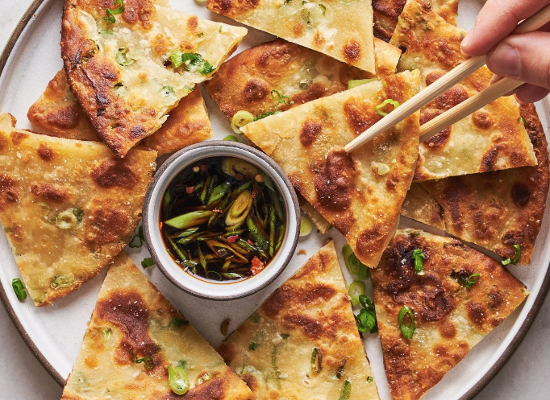

Scallion Pancakes

Descriptions
Scallion pancakes are a popular snack and street food in China and other parts of Asia, and can also be found in many Chinese restaurants around the world. They are a delicious and easy-to-make dish that can be enjoyed as a snack, appetizer, or side dish, and are a great way to use up extra scallions in your kitchen.
Ingredients
- 2 cups all-purpose flour
- 1/2 teaspoon salt
- 1 cup boiling water
- 1/2 cup thinly sliced scallions (green onions)
- 1/4 cup vegetable oil
Instructions
- In a large mixing bowl, whisk together the flour and salt.
- Slowly add the boiling water to the flour mixture, stirring with chopsticks or a wooden spoon until a rough dough forms.
- Turn the dough out onto a lightly floured surface and knead for 5-7 minutes until smooth and elastic.
- Cover the dough with a damp towel and let it rest for 30 minutes.
- After the dough has rested, divide it into 4 equal pieces and roll each piece into a thin, round pancake (about 8 inches in diameter).
- Brush the top of each pancake with vegetable oil and sprinkle with sliced scallions.
- Roll up each pancake tightly, jelly-roll style, and then coil each roll into a spiral shape, tucking the end underneath.
- Use a rolling pin to flatten each spiral into a thin pancake (about 1/4 inch thick).
- Heat a nonstick pan over medium heat and add 1 tablespoon of vegetable oil.
- Once the oil is hot, add a pancake to the pan and cook for 2-3 minutes on each side, until golden brown and crispy.
- Remove the pancake from the pan and place it on a paper towel-lined plate to cool.
- Repeat with the remaining pancakes, adding more oil to the pan as needed.
- Serve the scallion pancakes warm, cut into wedges, with soy sauce or another dipping sauce of your choice.